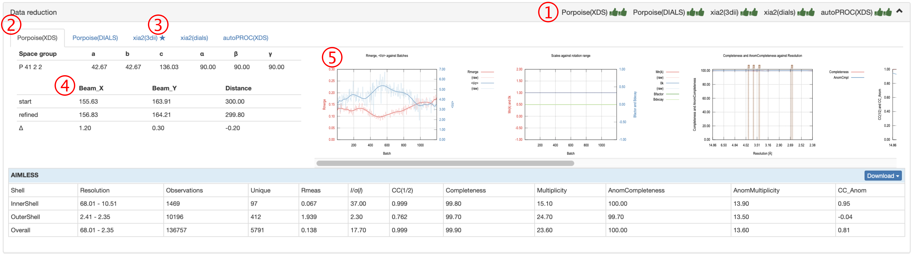
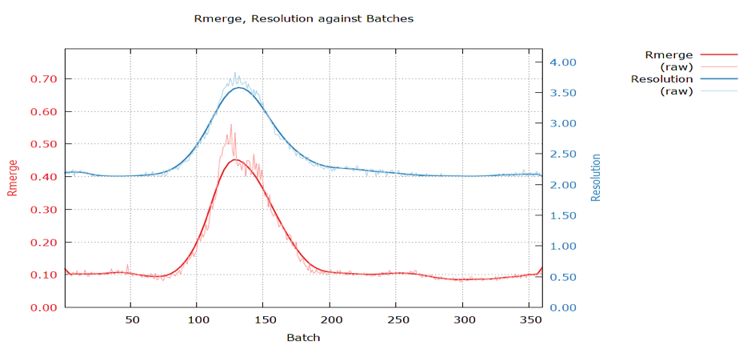
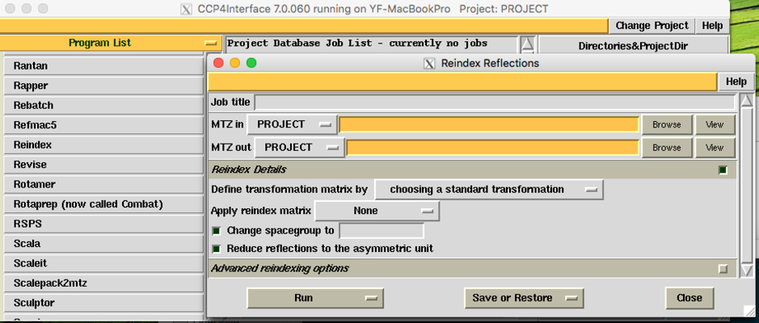
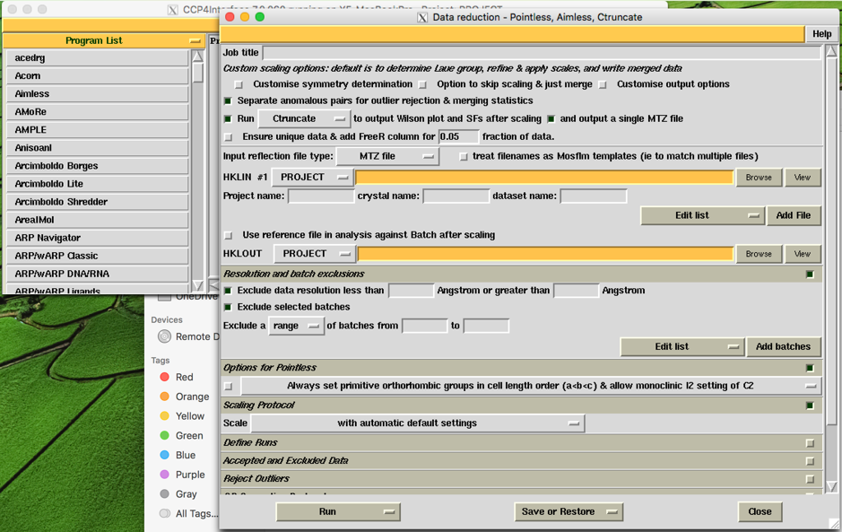

5. 数据还原¶
5.1. 数据还原结果显示¶
Aquarium使用5种不同管线来完成数据还原。在“Data reduction”标题栏上显示这五个管线的当前状态，具体含义如下：
五个管线的选项卡。请单击不同的管线查看该管线的处理结果。
SEAL会对每一个管线的处理结果进行打分，标记星号的管线是打分最高的管线。
Beamcenter和distance，实验记录值与修正值的比较。如果发现初始值和记录值有很大变化，则需要特别关注，具体分析原因。
各种统计图表。其中“CC(1/2) and CC_Anom against Resolution”可用于判断数据反常信号的强弱。
可通过CC_Anom（蓝色曲线）与分辨率壳层的作图，判断各个分辨率壳层中反常散射信号的强弱。CC_Anom越接近1，该壳层反常信号越强。
5.2. 修改自动处理结果的空间群，分辨率或排除部分衍射图¶
自动处理结果的空间群，分辨率或排除部分衍射图无需重新运行XDS或DIALS重新积分，所需要用到的软件为：
将XDS或DIALS的处理结果导入CCP4：Pointless
调整衍射分辨率：Aimless
修改空间群：Reindex和Aimless
排除部分衍射图：Aimless
以上软件均包含在CCP4软件包内。
数据还原结果中提供了一个XDS_ASCII.HKL格式的文件，文件名为*xxx_unmerged.hkl*。 1. 使用pointless将unmerged hkl文件转换为mtz文件 2. 运行reindex或aimless(可在CCP4图形界面下进行)
pointless –c xdsin xxx_unmerged.hkl hklout xds_sorted.mtz
aimless hklin xds_sorted.mtz hklout scaled.mtz > aimless.log << +
RESOLUTION LOW 999 HIGH 1.5
EXCLUDE BATCH 75 to 200
SCALES CONSTANT
+
如本例中将排除75到200的衍射图，并将高分辨率cutoff到1.5埃。也可以在CCP4的图形界面中进行。
 